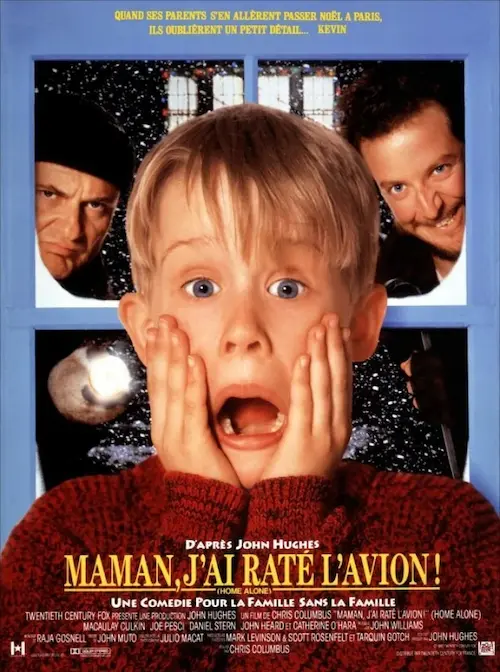
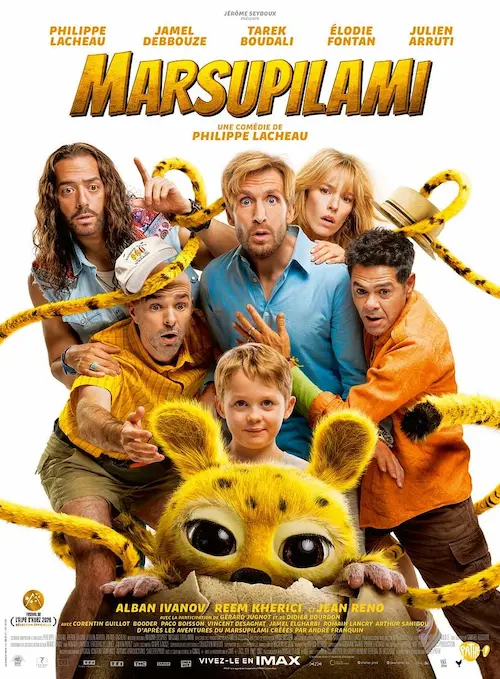
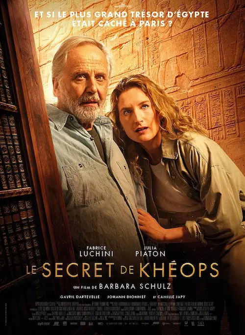
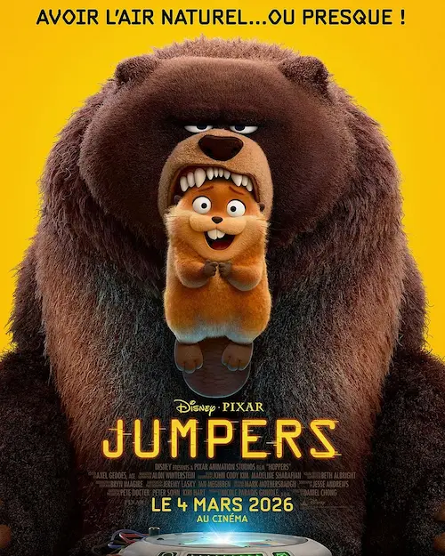
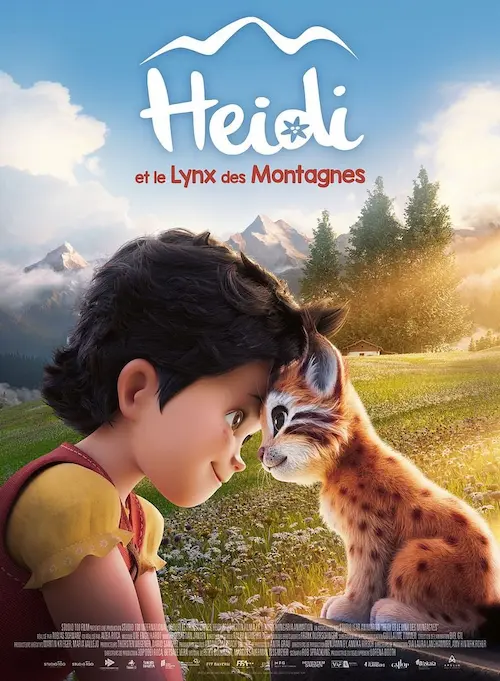
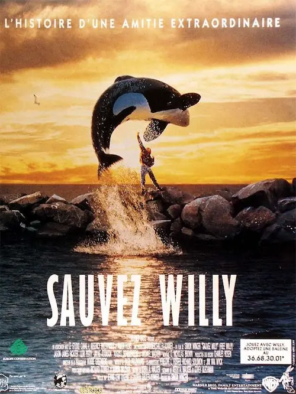
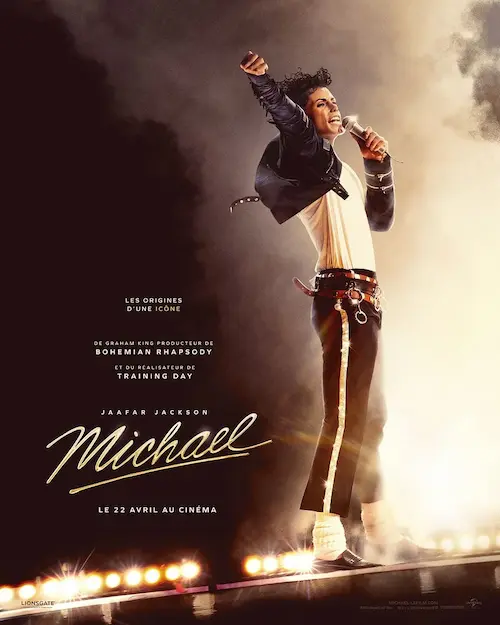
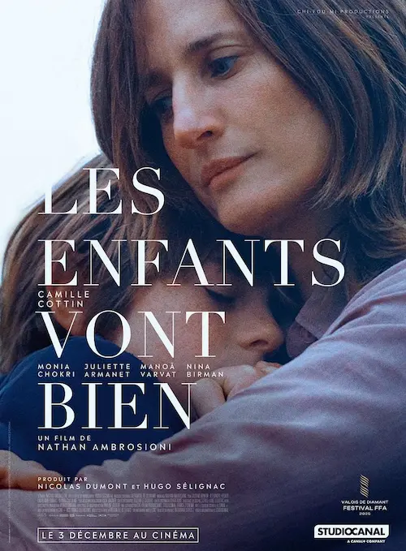
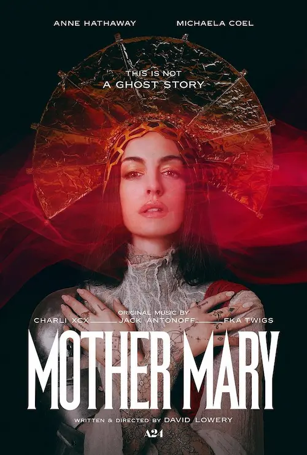

Comédies familiales, émotions, biopic, drames
Comédies familiales, moments d’émotion avec nos amis les animaux, biopic et drames… Voici le bilan des derniers films vus.
Maman, j’ai raté l’avion, 1990
Résumé

La famille McCallister au complet part à Paris pour Noël. Dans la précipitation du départ pour l’aéroport, Kevin est oublié à la maison. Lors de l’absence de ses parents, il fera ce qu’il faut pour défendre sa maison contre les cambrioleurs.
Mon avis
J’avais dit que cette année, je ne reverrai ni ne lierai d’œuvre déjà connues. J’ai déjà enfreint ce précepte plus d’une fois et Maman j’ai raté l’avion est assez ancien pour que j’en ai oublié beaucoup. Donc ce n’est pas grave 🤓.
J’aime bien Maman, j’ai raté l’avion pour ce qu’il représente : un bon film familial des années 90’ (je croyais même que c’était 80’) dans lequel il y a beaucoup d’humour, mais aussi des messages d’amour et de tendresse. Notre héros finit par comprendre qu’il tient à sa famille, en fin de compte. Et c’est beau.
En plus, à la lumière d’un livre de psychologie sociale sur la relation parents-enfants que je viens de lire (et dont je reparlerai dans un autre article), j’ai pu voir les interactions de Kevin et du reste de sa famille avec un autre œil. Il y avait des choses à faire pour éviter la crise ! 😅
Marsupilami, 2026
Résumé

Contraint par son patron de transporter illégalement un colis depuis l’Amérique du Sud, David emmène son ex femme et son fils en croisière pour avoir une couverture. Quand le paquet secret se révèle être un animal sauvage très rare, convoité par des mercenaires et par un défenseur de la nature, la famille se retrouve dans les problèmes jusqu’au cou.
Mon avis
Je me doutais bien que ce serait une comédie absurde, avec Philippe Lacheau aux commandes, et tous ses copains dans la place… Pour autant, ce n’est pas très amusant. Il y a des éléments très comiques, bien sûr, mais globalement, tout est trop exagéré, insensé et véhicule de mauvais messages ! La violence (entre humains et envers le marsu) y est dépeinte comme drôle, c’est une tragédie. Autant ce type de gag lourdingue passait bien dans Nicky Larson, parce que c’était l’esprit du manga, mais là, ça aurait pu être plus subtile.
En plus, le gamin était insupportable et le marsupilami un peu bizarre, quoique mignon par moments.
Bref, je n’ai pas aimé, et j’aurais bien aimé aimer ! 🤓
Le secret de Khéops, 2024
Résumé

Un archéologue spécialiste de l’Égypte antique pense que le trésor de Khéops a été déplacé en France par Napoléon.
Mon avis
J’aime beaucoup les films d’aventure et de chasse au trésor. Celui-ci est un peu plus atypique : français, il nous propose de fouiller en France ! L’intrigue autour du trésor prend la même place que l’intrigue familiale, ce qui équilibre un peu le tout. On ne retrouve pas la grisaille et la lenteur de certains films français. Le personnage loufoque de Robinson est amusant. C’était une belle découverte. Il faut quand-même être honnête, ce n’est pas le film d’aventure du siècle non plus !
Jumpers, 2026
Résumé

Attachée à un clairière dans laquelle elle observait les animaux avec sa grand-mère, Mabble essaie d’empêcher la construction d’une autoroute qui détruirait tout. Elle découvre une invention scientifique lui permettant de transférer son esprit dans un castor robotique afin d’infiltrer la population d’animaux.
Mon avis
J’ai bien aimé le style graphique et certains passages m’ont émue. Il y avait bien quelques animaux rigolos aussi. Malheureusement, je ne suis pas convaincue par le message qui me semble être que la technologie pourra sauver la nature. Ce propos est atténué par l’amitié entre la jeune fille et le castor, mais malgré tout, le résultat obtenu a été possible grâce au transfert d’esprit, même s’il a aussi apporté son lot de problèmes. J’ai trouvé que le message « on fait tous partie du même bateau », humains inclus, tombe un peu à l’eau quand en fait, les animaux se résignent et se tassent dans un coin parce que les humains prennent trop de place ou qu’il y a comme un roi des humains alors qu’il devrait faire partie des autres mammifères. Bref, je suis mitigée. C’est un joli dessin animé qui n’a pas de profondeur.
Heidi et le lynx des montages, 2025
Résumé

Heidi, petite fille des montagnes, décide d’aider un jeune lynx blessé à retrouver sa famille dans les sommets. Elle entend également déjouer les plans d’un entrepreneur cupide prêt à raser la forêt.
Mon avis
Le style graphique est joli et l’ambiance montagne / nature est plaisante. Le lynx est mignon. J’ai adoré réentendre la chanson d’Heidi. L’histoire quant à elle est assez simple et banale, et les personnages s’en tirent bien vu les risques qu’ils prennent. Une belle découverte, donc, mais pas un coup de cœur.
Sauvez Willy, 1993
Résumé

Jesse est un enfant abandonné, livré à lui-même, qui enfreint les règles du foyer d’accueil. Pour autant, il est recueilli par un couple. Puni par des travaux d’intérêt général au parc aquatique local, il découvre Willy, une orque en captivité qui ne coopère pas avec la dresseuse. Willy et Jesse se comprennent et se lient d’amitié.
Mon avis
J’avais aussi vu ce film il y a de très très nombreuses années. J’avais eu envie de le revoir à mon retour de vacances en Bretagne, pour prolonger le lien avec la mer.
C’est une jolie histoire qui nous montre que des liens forts, de l’écoute et de la bienveillance peuvent amener des êtres totalement différents à se comprendre. Jesse comprend la souffrance de Willy et il veut lui sauver la vie. Jesse sait que l’orque se meure à cause de la solitude, de l’emprisonnement et de sa séparation avec sa famille.
Bien sûr les passages de pêche, de capture, les vilains humains cupides, etc, tout cela est répugnant. Mais il faut bien ça pour nous montrer combien le gamin a un cœur en or.
Michael, 2026
Résumé

Biopic de l’artiste Michael Jackson : son enfance, sa place dans les Jackson Five, sa crainte face à son père, sa quête pour repousser ses limites, aider les autres, sa carrière solo, etc.
Mon avis
J’avais envie de voir un film porté sur la musique pour la fête de la musique. Celui-ci semblait adapté.
C’était un beau film, bien mené. Bon, le début m’a fait pensé à l’entrée en matière de Bohemian Rhapsody, le biopic sur Freddie Mercury., lorsque l’on voit l’artiste de dos, dans son costume mythique, qui s’apprête à monter sur scène alors que l’on entend la foule en délire. C’était un peu gros, quand-même.
À part ça, on est ancré dans l’histoire, on ressent bien ce que pouvait ressentir l’enfant. C’est toujours un peu bizarre de regarder un biopic, alors que la personne elle-même n’est plus là pour formuler. Que la famille Jackson ait été impliquée dans le processus peut être une bonne chose.
J’ai apprécié ce film, mais je ne comprends pas pourquoi il s’arrête là. C’est comme si on m’avait privée de la fin ! Après ça, je suis allée lire la page Wikipédia sur l’artiste pour combler le trou. Quel dommage !
Les enfants vont bien, 2025
Résumé

Suzanne vient rendre visite à sa sœur, Jeanne, avec ses deux enfants. Au petit matin, elle a laissé un mot et est juste partie. Elle a décidé de disparaître.
Mon avis
Ce film traite d’un sujet très intéressant, et l’on voit comment la gendarmerie ne peut rien faire, comment la sœur doit faire face, comment les enfants sont perturbés. C’est un bon film, parce qu’il faut montrer que ça existe. Les interprétations sont toutes convaincantes. Le ton est adéquat.
Pour autant, ça sent beaucoup trop le film français. Alors oui, c’est un drame, donc la langueur, la grisaille et la lourdeur, parfois, des films français s’y prêtent bien. Mais quand est-ce que les voix d’un film français seront bien raccord avec le reste du son ?
Bref, à part ça, je n’ai pas compris pourquoi le spectateur était exclu de certains aspects de la vie de Jeanne, pourquoi il est parfois bloqué derrière la fenêtre à essayer de voir et d’entendre ce qui se passe dans la maison, alors qu’on est censé nous montrer comment l’intimité de cette femme et de ces enfants est bouleversée. Bizarre.
Mother Mary, 2026
Résumé

Une star de la pop sur le retour, suite à un accident sur scène, est en proie à une crise existentielle. Elle retourne auprès de son ex créatrice de costume, de qui elle était très proche, pour lui demander une nouvelle robe. Les non-dits et les rancœurs amènent les deux femmes à se confier sur un événement marquant de leur vie qui a eu lieu après leur rupture.
Mon avis
Ce film m’a laissée perplexe. Il est hyper beau, l’ambiance est saisissante. La musique, les costumes, l’image… Tout est épatant. Les deux comédiennes sont très intenses. Et on sent que l’histoire peut virer à tout moment. La scène du pseudo exorcisme était un peu banale, voire ridicule, après la danse en mode « possédée », mais pas grave, j’étais captivée.
Par contre, à la fin je me suis dis que « oui, tout est là, c’est un bon film, mais je n’ai rien compris ». Pourquoi elle ne porte pas la robe, en fin de compte ? Est-ce qu’il y a bien deux femmes ? Je ne sais pas, et ce n’est pas le genre de film qu’il faut revoir une deuxième fois pour mieux en saisir le sens comme Tenet.
Voilà pour mes dernières (re)découvertes cinématographiques. C’est toujours très agréable de se voir un bon petit film.